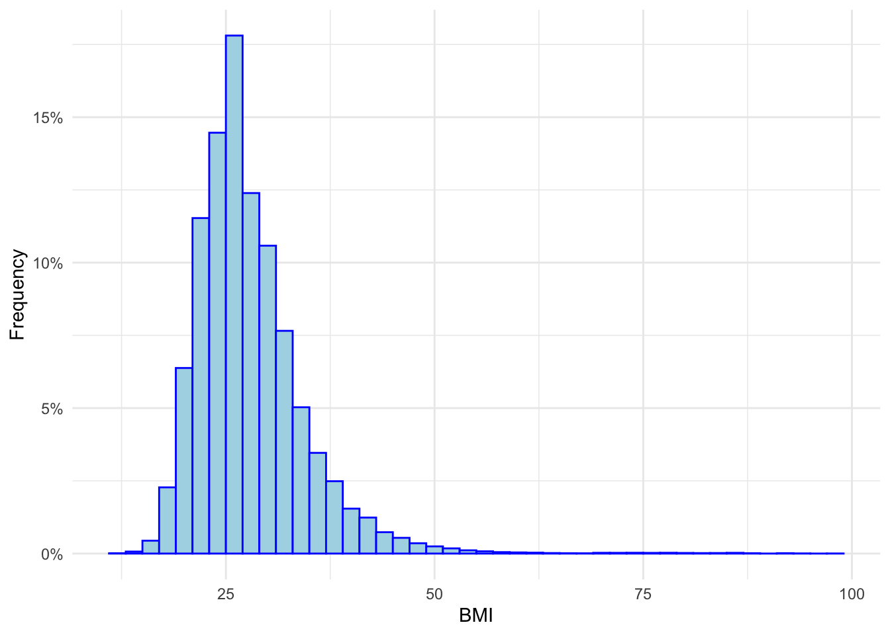
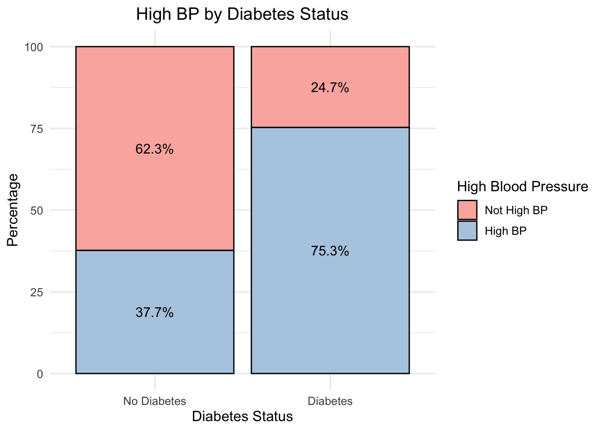

#Read in data and create a tibble
diabetes_data <- read.csv("diabetes_binary_health_indicators_BRFSS2015.csv")
diabetes_data <- as_tibble(diabetes_data)
#Create vectors for the factor variables
Diabetes_labels <- c("No Diabetes", "Diabetes")
HighBP_labels <- c("Not High BP", "High BP")
HighChol_labels <- c("Not High Chol", "Chol")
PhysActivity_labels <- c("No","Yes")
Sex_labels <- c("Female","Male")
Age_labels <- c("18-24","25-29","30-34","35-59",
"40-44","45-49","50-54","55-59",
"60-64", "65-69", "70-74", "75-79","80 or older")
Income_levels <-c("Less than $10,000",">15000",">20000",">25000",">35000"
,">50000",">75000","75000+")
#Mutating the data set to only include the relevant variables models ran and to
#modify the type of variable and remove missing variables
diabetes_data <- diabetes_data |>
drop_na() |>
mutate(
Diabetes_binary = factor(Diabetes_binary, levels = c(0,1), labels = Diabetes_labels),
HighBP = factor(HighBP, levels = c(0,1), labels = HighBP_labels),
HighChol = factor(HighChol, levels = c(0,1), labels = HighChol_labels),
PhysActivity = factor(PhysActivity, levels = c(0,1), labels = PhysActivity_labels),
Sex = factor(Sex, levels = c(0,1), labels = Sex_labels),
Age = factor(Age, levels = 1:13, labels = Age_labels),
Income = factor(Income, levels = 1:8, labels = Income_levels)
) |>
select(Diabetes_binary,HighBP,PhysActivity,BMI)EDA
#Introduction section
For this project, I will be analyzing the impact of specific health indicators on the likelhood of getting diabetes. While there are many indicators in the data set, I have decided to only look into three specific variables: Physical activity, BMI and Blood Pressure. I picked these three variables to specifically narrow down the impacts of cardiometabolic factors on diabetes.
For the next section of the project, I will do exploratory data analysis to analyze the relationships each of the three variables have on the independent variable of having diabetes. This EDA will also help identify any data quality issues and help understand the different data types and distributions.
In the second part of this project, I will use three different models to help understand the relationships and make predictions about diabetes probabilities in the future. The three models will be a logistic regression model, classification tree, and a random forest.
#Data: Use a relative path to import data
#Summarizations: Univariate
#Look at summary of the data and the structure of the variables
summary(diabetes_data)
str(diabetes_data)Above, we can see the frequency of our variables and the variable type for each variable. This will be important later as we create the models. We will get more into the summary of each variable below.
#Graph for BMI
ggplot(data=diabetes_data, aes(x=BMI))+
geom_histogram(aes(y=after_stat(count/sum(count))),
binwidth=2,fill="lightblue",
color ="blue") +
scale_y_continuous(labels = function(x) paste0(round(x * 100, 1), "%")) +
xlab("BMI")+
ylab("Frequency")+
theme_minimal()
Looking at the histogram of BMI by count, we can determine the data is slightly left skewed, while the median BMI in the data set is 27.
#Pivot
Frequencies <- diabetes_data |>
select("HighBP", "Diabetes_binary", "PhysActivity") |>
pivot_longer(everything(),names_to = "Variables", values_to="Categories") |>
group_by(Variables,Categories) |>
summarize(count = n(), .groups ="drop") |>
group_by(Variables) |>
mutate(Percentage = round(100 * count / sum(count), 1))#Graph for Frequencies of Physical Activity, High BP, and Diabetes
ggplot(Frequencies, aes(x = factor(Categories), y = Percentage, fill = factor(Categories))) +
geom_col(color = "blue") +
geom_text(aes(label = paste0(Percentage, "%")), vjust = -0.5) +
scale_y_continuous(limits = c(0, 100),expand = expansion(mult = c(0, 0.05))) +
facet_wrap(~ Variables, scales = "free_x") +
labs(x = "Category", y = "Percentage", title = "Distribution of Variables in Diabetes Dataset") +
theme_minimal() +
theme(legend.position = "none")From looking at this chart, we can determine that only around 14% of our sample has diabetes.
The amount of the sample with high blood pressure is almost 43% and those who excercise is around 76%.
#Look at relationship between diabetes and each of the #indepedent variables
#Diabetes + BMI
Diabetes_means <- diabetes_data |>
group_by(Diabetes_binary)|>
summarize(BMI_mean = mean(BMI,na.rm =TRUE), count =n())
print(Diabetes_means)# A tibble: 2 × 3
Diabetes_binary BMI_mean count
<fct> <dbl> <int>
1 No Diabetes 27.8 218334
2 Diabetes 31.9 35346ggplot(data = diabetes_data, aes(x = Diabetes_binary, y = BMI, fill = Diabetes_binary)) +
geom_boxplot(outlier.color = "red", outlier.shape = 16, outlier.size = 2, notch = TRUE) +
stat_summary(fun = mean, geom = "point", shape = 23, size = 3, fill = "yellow", color = "black")+
scale_fill_manual(values = c("skyblue", "salmon")) +
labs(
title = "BMI Distribution by Diabetes Status",
x = "Diabetes Status",
y = "Body Mass Index (BMI)",
fill = "Diabetes"
) +
theme_minimal(base_size = 14) +
theme(
plot.title = element_text(hjust = 0.5, face = "bold"),
legend.position = "none"
)From the summary table and the box plot, we can see that the mean BMI from those with diabetes is slightly greater than those without diabetes, concluding there could be some relationship that a higher BMI relates to having diabetes.
#Diabetes + High BP
#Create a frequency table
High_BP_Percentages <- diabetes_data |>
group_by(Diabetes_binary,HighBP) |>
summarise(count =n (),.groups = 'drop') |>
group_by(Diabetes_binary)|>
mutate(percent = 100 * count / sum(count))
print(High_BP_Percentages)# A tibble: 4 × 4
# Groups: Diabetes_binary [2]
Diabetes_binary HighBP count percent
<fct> <fct> <int> <dbl>
1 No Diabetes Not High BP 136109 62.3
2 No Diabetes High BP 82225 37.7
3 Diabetes Not High BP 8742 24.7
4 Diabetes High BP 26604 75.3#Create a stacked bar chart to visually demonstrate
ggplot(High_BP_Percentages, aes(x = factor(Diabetes_binary), y = percent, fill = HighBP)) +
geom_bar(stat = "identity", color = "black") +
geom_text(aes(label = paste0(round(percent, 1), "%")),
position = position_stack(vjust = 0.5), size = 4, color = "black") +
scale_fill_brewer(palette = "Pastel1") +
labs(
title = "High BP by Diabetes Status",
x = "Diabetes Status",
y = "Percentage",
fill = "High Blood Pressure"
) +
theme_minimal(base_size = 12) +
theme(plot.title = element_text(hjust = 0.5))
From this graph, we can clearly see that those who have diabetes are much more likely to have high blood pressure as 75% have high blood pressure compared to only 38% of those who do not have diabetes.
#Diabetes + High BP
#Create a frequency table
Phys_Activity_Percentages <- diabetes_data |>
group_by(Diabetes_binary,PhysActivity) |>
summarise(count =n (),.groups = 'drop') |>
group_by(Diabetes_binary)|>
mutate(percent = 100 * count / sum(count))
print(Phys_Activity_Percentages)# A tibble: 4 × 4
# Groups: Diabetes_binary [2]
Diabetes_binary PhysActivity count percent
<fct> <fct> <int> <dbl>
1 No Diabetes No 48701 22.3
2 No Diabetes Yes 169633 77.7
3 Diabetes No 13059 36.9
4 Diabetes Yes 22287 63.1#Create a stacked bar chart to visually demonstrate
ggplot(Phys_Activity_Percentages, aes(x = factor(Diabetes_binary), y = percent, fill = PhysActivity)) +
geom_bar(stat = "identity", color = "black") +
geom_text(aes(label = paste0(round(percent, 1), "%")),
position = position_stack(vjust = 0.5), size = 4, color = "black") +
scale_fill_brewer(palette = "Pastel1") +
labs(
title = "Physical Activity by Diabetes Status",
x = "Diabetes Status",
y = "Percentage",
fill = "Physical Activity"
) +
theme_minimal(base_size = 10) +
theme(plot.title = element_text(hjust = 0.5))When looking at the chart of diabetes status by physical activity, we can see that while over 50% of those with diabetes do physical activity, those who do not have diabetes do more physical activity.
#Looking interactions between the BMI and High blood pressure
BMIMeans <- diabetes_data |>
group_by(HighBP, Diabetes_binary) |>
summarize(mean_BMI =mean(BMI),.groups="drop")
print(BMIMeans)# A tibble: 4 × 3
HighBP Diabetes_binary mean_BMI
<fct> <fct> <dbl>
1 Not High BP No Diabetes 26.9
2 Not High BP Diabetes 30.4
3 High BP No Diabetes 29.2
4 High BP Diabetes 32.4ggplot(data = diabetes_data, aes(x = HighBP, y = BMI, fill = factor(Diabetes_binary))) +
geom_boxplot(outlier.color = "red", outlier.size = 1) +
scale_fill_manual(
values = c("No Diabetes" = "skyblue", "Diabetes" = "salmon"),
name = "Diabetes Status",
labels = c("No", "Yes")
) +
labs(
title = "BMI Distribution by High Blood Pressure and Diabetes Status",
x = "High Blood Pressure",
y = "Body Mass Index (BMI)"
) +
theme_minimal(base_size = 12) +
theme(
plot.title = element_text(hjust = 0.5),
legend.position = "top"
)From the table of means and the boxplot we can determine that those with diabetes have a slightly greater BMI despite there blood pressure status.
#Looking interactions between the BMI and Physical Activity
PhysicalAct_Means <- diabetes_data |>
group_by(PhysActivity, Diabetes_binary) |>
summarize(mean_BMI =mean(BMI),.groups="drop")
print(PhysicalAct_Means)# A tibble: 4 × 3
PhysActivity Diabetes_binary mean_BMI
<fct> <fct> <dbl>
1 No No Diabetes 29.3
2 No Diabetes 33.3
3 Yes No Diabetes 27.4
4 Yes Diabetes 31.2ggplot(data = diabetes_data, aes(x = PhysActivity, y = BMI, fill = factor(Diabetes_binary))) +
geom_boxplot(outlier.color = "red", outlier.size = 1) +
scale_fill_manual(
values = c("No Diabetes" = "skyblue", "Diabetes" = "salmon"),
name = "Diabetes Status",
labels = c("No", "Yes")
) +
labs(
title = "BMI Distribution by Physical Activity and Diabetes Status",
x = "Physical Activity",
y = "Body Mass Index (BMI)"
) +
theme_minimal(base_size = 12) +
theme(
plot.title = element_text(hjust = 0.5),
legend.position = "top"
)#Takeaways from EDA
From our EDA, we can determine that all three variables have at least some effect on diabetes, although it does not seem that all variables were created equal, as high blood seems to have the strongest relationship with diabetes.